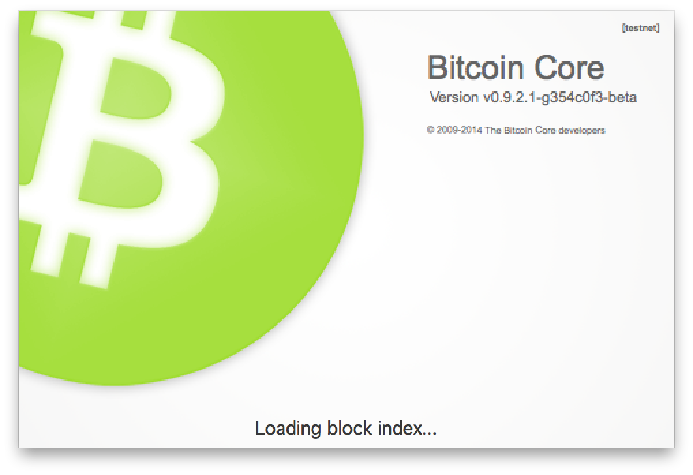
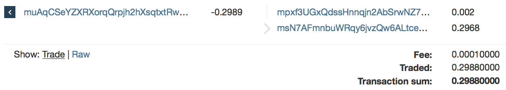

1 Testnet
Some of you might be aware of the “other” Bitcoin blockchain — testnet3 — which is mined in parallel to the main blockchain — mainnet — and since coins on testnet are entirely worthless we can develop safely without our mistakes being too costly.
Testnet coins are worthless - but useful. They are useful because they are worthless.

To receive testnet coins we can either mine them or withdraw some from a faucet. Although the difficulty of mining on testnet is orders of magnitudes lower than on mainnet it still takes too long for our needs. A faucet is simply a website run by a Bitcoin volunteer, who has mined some coins, where we can ask to be sent some coins to our wallets.
Maybe not so surprisingly Xenog, one of the developers of Haskoin, is such a volunteer and using his faucet we can acquire some coins. I requested 0.3 coins which I received moments later to my wallet.
Currently mainnet addresses begin with either 1 or 3 (although this might change in the future) and testnet addresses usually begin with m or n.
To access testnet we launch bitcoind or Bitcoin-Qt with -testnet as a command line parameter and a green splash screen is presented (as opposed to the normal orange) to remind us that we’re on the testnet blockchain. If you want to make this a permanent change add testnet=1 to your bitcoin.conf file.
Since there are not that many peers running constantly on the testnet peer discovery can be somewhat tricky. A standard trick is to use -addnode to seed our peer connections with a known peer who can notify us about other peers. The commercial version of Haskoin runs both an official mainnet and testnet nodes on ports 8333 and 18333, respectively.
$ ./Bitcoin-Qt -testnet -addnode=haskoin.com2 keys, addresses and transactions
Bitcoin addresses are used to receive bitcoins but it is important to understand that the coins — a.k.a. satoshis — are neither stored in that address nor are they stored in the recipient’s wallet. When Alice wants to send Bob satoshis she or her wallet on her behalf will construct a transaction and broadcast it to the peer network. If the transaction is valid it will included in the blockchain.
Alice’s transaction will include:
- a reference a prior transaction
- a value
- a destination address
- a proof that she controls the funds being spent
The value is the amount of satoshis Alice wants to send to Bob and the destination address in this case is one of Bob’s addresses. As a proof Alice signs the transaction with the private key (matching the address used as destination in the prior transaction) which allows the peers to verify that she controls the funds being spent.
Seen in this light the blockchain is simply a journal of transactions — crediting a prior transaction and debiting an address — which allows satoshis to be spent by adding a new transaction to the journal and providing a signature proving the ownership of the referred address.
3 Base58Check and Wallet Import Format (WIF)
The private keys are 256 bit binary blobs which can be hard to move reliably between devices. Bitcoin uses a modified version of Base 58, called Base58Check, to encode both private keys and addresses in ASCII.
The resulting Base58Check-encoded private key is said to be in Wallet Import Format (WIF).
The relationship between the private key, public key and the bitcoin address can be represented by:
4 Simplest wallet possible
For the rest of the post our goal is to use Haskell to receive satoshis in as simple manner as possible. All we need to do is to generate a private key and derive from it an address. Using the address we can receive the coins and as long as we keep the key safe we can spend it later using any wallet which supports importing WIF keys.
randomKey :: IO PrvKey
randomKey = withSource devRandom genPrvKey
bitcoinAddress :: PrvKey -> String
bitcoinAddress = addrToBase58 . pubKeyAddr . derivePubKey
main :: IO ()
main = do
arg <- listToMaybe <$> getArgs
k <- maybe randomKey return (fromWIF =<< arg)
putStrLn $ "Key: " <> toWIF k
putStrLn $ "Address: " <> bitcoinAddress kWithout any arguments this program will randomly generate a private key and print it (in WIF) and its derived address. It is also possible to pass the private key as an argument in which case the address will be derived from that key.
$ cabal run
Key: XXXXXXXXXXXXXXXXXXXXXXXXXXXXXXXXXXXXXXXXXXXXXXXXXXXX
Address: mpxf3UGxQdssHnnqjn2AbSrwNZ7wkd2wBSNote that the key above has been redacted. You should under no circumstances reveal your key since this will allow others to spend the satoshis associated with the key.
5 Receiving satoshis to our wallet
Let’s try to fill our simple wallet with some coins. To do so we will broadcast a transaction, using Bitcoin-Qt, spending 0.002 to mpxf3U....
This transaction can be analyzed on the testnet3 blockchain using a blockchain explorer. The transaction has two outputs spending 0.002 to mpxf3U... (the address generated above using Haskoin) and 0.2968 to msN7AF.... Since transactions can only spend the full amount (0.2989) of a previously unspent transaction output the Bitcoin-Qt wallet must generate a new address spending the rest of the amount back to itself.

The 0.0001 is the network fee which a miner collects who successfully adds a block containing this transaction to the blockchain. This transaction thus spends the previous UTXO completely.
0.002 + 0.2968 + 0.0001 = 0.29896 Bitcoin scripts
Most blockchain explorers present the previous UTXO as an address like muAqCS.... This is probably done to simplify things as it gives the illusion that money is being sent from one address (resembling a traditional bank account) to another. In reality a transaction references UTXOs in different transactions.
Although this information is hidden when using blockr.io it can be seen by using blockexplorer.com. The transaction references the first output (zero-th index) from f0b04f.... To spend the 0.2989 which the Bitcoin-Qt wallet received at muAqCS... it must only fulfill the conditions of the pubkey script (scriptPubKey) for the UTXO, which is:
OP_DUP OP_HASH160 95c3848663509dcb35e5ec95653df88edae40482 OP_EQUALVERIFY OP_CHECKSIGIncidently 95c384... is RIPEMD-160 of the public key associated with the address muAqCS... which enables the blockchain explorers to present the UTXO as an address.
Wallets fulfill conditions by including a signature script (scriptSig) in the broadcasted transaction. In the simplest case the signature script contains an secp256k1 signature (Sig) and a full public key (PubKey).
<Sig> <PubKey> Bitcoin’s scripting language is a stack-based language deliberately designed to be stateless and not Turing complete. To test whether the transaction is valid the signature script is prepended to the pubkey script and the resulting script is evaluated.
<Sig> <PubKey> OP_DUP OP_HASH160 95c3848663509dcb35e5ec95653df88edae40482 OP_EQUALVERIFY OP_CHECKSIGParticipants on the peer network only add the transaction to the blockchain (confirming the spending of the transaction) if this script evaluates to true. The above script evaluates to true if the transaction signature (using PubKey) equals Sig.
In a later posts we will analyze how to read, write and evaluate scripts.
7 Handing control over funds to another wallet
Finally — to drive the idea home that the satoshis are not stored in a wallet but as UTXO on the blockchain I’m going to show you how to hand over funds in our simplistic wallet to another wallet. As discussed previously funds are spent by broadcasting a transaction referencing a previous UTXO and proving that you were the intended recipient by providing a signature script. In most cases this means that you’ll be providing a public key and a signature — both of which are derived from the private key.
I will show you the process by handing over the funds back to our Bitcoin-Qt client without constructing a transaction and broadcasting it to the peer network. The exact same method could be used to move funds to a third wallet.
In the Bitcoin-Qt click on the Help menu and then Debug window.
Select the Console tab and import the private key (generated above using Haskoin).
This will force Bitcoin-Qt to rescan to blockchain for transactions related to the new key and aggregate the UTXOs. Fortunately the testnet blockchain is small enough for this process to take under a minute. Subsequently you should see the funds (0.002) associated with the simplistic wallet appear as available funds in Bitcoin-Qt. Now, since both wallets have the private key they will both be able to broadcast a valid transaction, spending the funds.
importprivkey XXXXXXXXXXXXXXXXXXXXXXXXXXXXXXXXXXXXXXXXXXXXXXXXXXXXNext time we’ll take a closer look at haskoin-wallet.